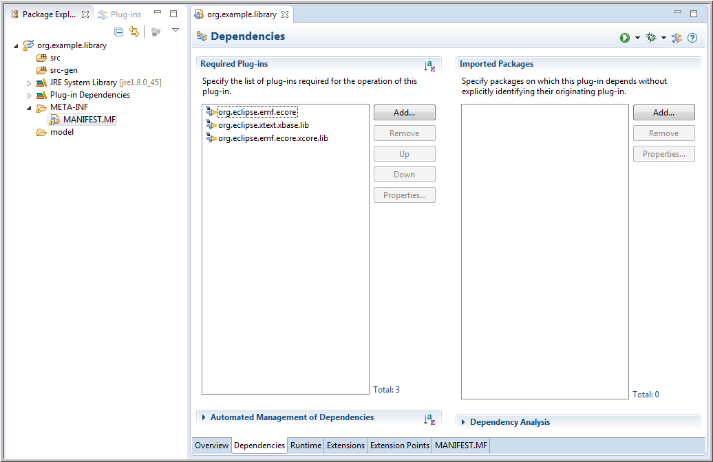
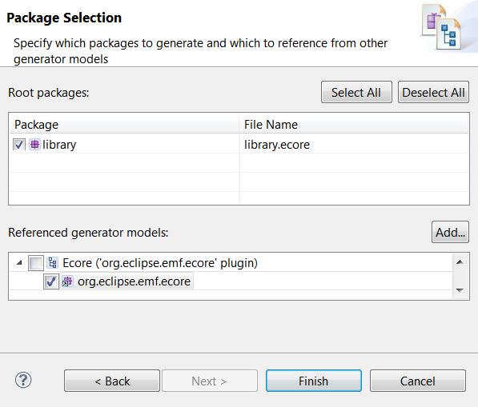

Summary
Xcore is an extended concrete syntax for Ecore that, in combination with Xbase, transforms it into a fully fledged programming language with high quality tools reminiscent of the Java Development Tools. You can use it not only to specify the structure of your model, but also the behavior of your operations and derived features as well as the conversion logic of your data types. It eliminates the dividing line between modeling and programming, combining the advantages of each. All this is supported for both generated and dynamic EMF models.
Xcore can be used in any properly-configured Java project. There's a convenient wizard for creating an empty pre-configured project.
File → Project... and enter Xcore in the filter field or locate Xcore → Xcore Project.Next to advance the "New Project" wizard and enter the name of your project.
It's best to use a qualified name that will be appropriate as a plug-in ID and as a prefix for your Java packages, i.e, org.example.library.
Finish to complete the wizard.In your workspace you'll see your new project.
It's a project with a Java, PDE, and Xtext natures that contains the following:
src folder for your hand written Java code.src-gen folder in which your model code will be generated by default.MANIFEST.MF with prepopulated dependencies for EMF Ecore and Xtext Xbase.model folder.
Of course it's possible to start with any Java project and use the Convert → Add Xtext Nature or Convert → Convert to Plug-in Projects
to introduce the missing natures and to edit the MANIFEST.MF to add missing dependencies.
An Xcore model is created in the model folder via its context menu using New → File to create an empty new file with extension .xcore,
e.g., Company.xcore.
This will open the Xcore-aware editor.
It starts out with an error marker, because an empty file isn't a valid Xcore instance.
The editor supports syntax completion so if you enter Ctrl-Space, you'll see it fills in the package keyword.
Next you need to enter a package name, e.g., org.example.company.
If you save, you'll see the error markers go away.
You've created an empty Xcore package. Files build.properties, plugin.properties and plugin.xml
are automatically created at the top level of the project during the save.
As you can see, like Java, an Xcore model starts with a package declaration but note that that there's no semicolon.
Note too that nothing is generated in the src-gen folder yet; EMF doesn't generate anything for empty packages.
Now you're ready to create something more meaningful.
Add two blank lines and try hitting Ctrl-Space again to see what you're allowed to enter next.
We'll start by defining a class called Library.
After entering the class keyword and the name of the class, type a curly brace: the closing curly brace is automatically inserted.
If you now save the editor, you'll see the following:
Notice that the model code has been generated automatically.
Now you're ready to define the structure of the Library class.
Within the curly braces, hit Ctrl-Space to see what you're allowed to enter next.
To specify an attribute, you need to specify the name of a data type followed by the name of the feature.
So if you choose String, enter name, and save, you'll see the following:
Of course the corresponding feature accessor methods, i.e., getName() and setName(String), will immediately be generated in the Library interface.
Note that while the Xcore source shows the use of String,
which in the completion proposal you saw earlier was listed as java.lang.String,
from the hover information you can see that the reference actually resolves to the EString data type from the built-in Ecore package.
Xcore provides familiar aliases for all of the Ecore data types that correspond to Java built-in and mathematical types.
If your attribute is a reserved word such as type or id,
you will need to escape it with a ^.
For example: String ^type.
class Library
{
int ^id
String ^type
}
If you need to specify a default value for an attribute, you can use the following syntax:
class Library
{
String name = "Default Name"
boolean stateOwned = "true"
}
In the above example, the string after the equals sign will be used to populate the Default Value Literal property of the Ecore feature.
Thus, the generated Java implementation code will contain:
public class LibraryImpl ...
{
protected static final String NAME_EDEFAULT = "Default Name";
protected static final boolean STATE_OWNED_EDEFAULT = true;
...
}
We'll want libraries to contain books and authors, so let's add two more empty classes, Book and Writer so that we can specify references to them in the library.
If we try the same approach as defining the name feature, you'll end up with the following:
That's because Xcore interprets this as an attribute and the type of an attribute must be a data type, not a class. If you hover over the error indicator, you'll see how to fix the problem.
In this case, we want to define a containment reference, so choose that option.
Notice that if you select the reference to Book you can use F3 to navigate to the definition for the Book class.
Of course we wanted to define this to be a multi-valued reference and here have specified a single-valued reference.
The multiplicity of a feature is specified with the bounds in square brackets, where [] is used as a short-hand for [0..*] as follows:

Let's define another multi-valued containment reference called authors and save the result, which will look as follows:
Again, the expected results are immediately generated. Notice that the outline view uses icons are much like the GenModel's icons, though with a purplish cast rather than a bluish one.
If you wanted a convenient API for navigating from a Book or Writer to its containing Library you'd specify container reference with an opposite like this:
Notice that completion support is available for specifying the opposite. When you select a choice, the opposite is automatically updated to refer back.
Let's add a container feature for Writer as well,
and let's define title and pages features for Book and a name feature for Writer to produce the following:
Note how we've made use of int as an alias for EInt to define the type for pages.
The most important thing left to complete the picture is specifying the bidirectional relationship between Books and Writers.
Specifying a cross reference is done much like we did for containment and container references, but using the refers keyword.
We start by specifying one of the two references,
i.e, a Book has authors, then the other,
i.e., a Writer has books,
at which point we can also specify the opposite.
Notice that opposite completion is supported here as well and that upon completion, both opposites are properly paired.
Of course F3 navigation is supported for the reference to an opposite.
References can be declared with the local modifier keyword.
That is equivalent to setting the Ecore Resolve Proxies attribute to false.
Supposed we wanted to categorize the kinds of books we have in the library.
We could specify an enumeration named BookCategory for that and use it to specify a feature named bookCategory in Book as follows:
If you want to specify the integer values for the enum:
enum BookCategory
{
Mystery = 0
ScienceFiction = 1
Biography = 2
}
If you want to specify the literal values for the enum:
enum BookCategory
{
Mystery as "M"
ScienceFiction as "S"
Biography as "B"
}
If you want to specify both the integer value and the literal values for the enum:
enum BookCategory
{
Mystery as "M" = 0
ScienceFiction as "S" = 1
Biography as "B" = 2
}
Suppose we wanted to specify the copyright date of a book.
Of course we could use EDate from Ecore, but its serialization format is more like date and time, so that might not exactly fit our needs.
Instead we could define our own Date data type to wrap java.util.Date as follows:
A data type acts as a wrapper for an existing Java type, so the completion proposal supports choosing a Java class that matches the name we've started typing. Upon selection, an import is added, so we can use the short form of the name.
Because classifier names and Java type names can never be used interchangeably in any Xcore scope, it's not a conflict to import the Java name in a scope that also defines a classifier with the same name.
So far everything we've shown are things you could do with Ecore directly,
so we've only seen how Xcore provides a concise textual syntax for Ecore.
To complete the support for our own Date type,
it would normally be necessary to modify the generated LibraryFactoryImpl class' methods that implement string conversion for this data type.
With Xcore, we can specify this logic directly in the model.
Note that if we look at the proposals for what may follow the type specification,
we can see that the create and convert keywords are expected.
So we can choose to start specifying the create logic for creating an instance of the data type from a String value which is specifying within the curly braces of a block.
We can using Java's java.text.SimpleDateFormat class as follows:
Notice that completion proposals understand what's on the classpath so we can use that for calling the constructor.
To refer to the instance of the data type within the body we use "it", which acts much like the implicit this variable in Java.
We also need to consider that parse can throw a ParseException that we need to handle properly.
In addition, the value of the data type might be null, so best we guard for that case too.
And finally, we can use a similar approach to specify the convert logic to produce the following complete result:
Notice we've also used the new data type to define a copyright feature in the Book class
and that all the Java classes we've used were automatically imported by completion.
The notation for expressing behavior in Xcore uses the model defined by Xbase.
It's very similar to Java, but is expression oriented, so even things that are statements in Java, return a value in Xcore/Xbase.
That's why you don't see a return statement.
Suppose you wanted convenience methods on Library, e.g., an operation to retrieve a Book give its title.
We could specify that as follows:
Again, the syntax is very Java-like and of course completion proposals are aware of the Java APIs implied by the Xcore model definition so feature names such as books are in the proposals.
Here's how we would complete the definition:
We return null if we reach the end of the loop without a match.
That's all there is to it.
If you look at the generated implementation class for Library you'll see it compiles to the following Java code:
Notice that the == comparison for title is compiled to a null-safe Object.equals test.
Notice also that all the things that look like simple field accesses in the Xcore code
actually compile down to proper calls to the generated API accessor methods.
One of the nice things about Xcore is that you get the advantages of writing what look like simple Java classes with simple fields declarations,
including the ability to write a notation as if you had simple fields,
but you end up with properly defined APIs and proper uses of them.
To return Lists from operations,
don't use the Java syntax but XCore syntax,
e.g., Book[] getBooks(String filter) instead of List<Book> getBooks().
To have your operation return any Java type, define it as a Data Type first; see previous section.
With Xcore it's even possible to define the behavior of a derived feature.
You only need to mark the feature as derived and, using the get keyword, define within a block how the value is completed.
For example, you could specify a derived attribute to compute the last name of the Writer as follows:
If your class needs to implement an interface such as java.lang.Iterable, you wrap it just as you would a type.
For examplexample:
type Iterator wraps Iterator<EObject>
interface Iterable wraps java.lang.Iterable<EObject>
{}
class MyClass extends Iterable
{
op Iterator iterator()
{
return new SpecialIterator();
}
}
Ecore supports general-purpose annotations comprising a source string (typically a URI) for specifying identification and a map of string-based key-value pairs for specifying the details. Rather than requiring the typically large source URI to be repeated on each use, Xcore provide support for specifying a simple alias for it as follows:
We can then use it as follows:
Annotations with the GenModel's nsURI have specialized support in Xcore.
Any key that matches the name of a feature in the GenModel, will be used to populate that feature.
If you have a look at your generated model after saving the above,
you will notice that the base class of each modeled class's implementation class has changed to use the one we've just specified.

Note that even the annotation definition itself is not necessary for this case because this "alias" is defined in xcore.lang and is therefore visible everywhere by default:
Not only does Xcore generate you model code as you'd expect, everything we've specified works in dynamic models as well.
Let's create a dynamic instance of Library by selecting it and bringing up the context menu for it as follows:
This brings up the following wizard, which lets you control the name and location of the new instance:
The defaults should be fine for now do drive the wizard to completion.
This will open the Sample Reflective Editor as follows:
Expanding the first resource and double clicking on the Library instance will bring up the properties view.
Notice that the Library.xcore resource is loaded in order to load the dynamic Library instance.
If you expand it, you'll notice it contains the Xcore model, the GenModel, the Ecore model, and a bunch of JVM model instances.
The GenModel and Ecore model are derived from the details in Xcore model.
The various JVM model instances in turn are derived from the GenModel, i.e, all the information about the Java artifacts that are generated by the GenModel.
Additional resources contain things that are referenced directly and indirectly from our model.
Let's make the model more complete by creating a Book.
We can do the same thing to create a Writer.
Let's have a look at the properties for a Writer.
We can given the Writer a Name, say Arthur C Clark using the properties view.
Notice that the Last Name updates correctly whenever we change the full Name.
Let's populate some of the information about the Book.
We'll call it 2001: A Space Odyssey and set the copyright date to September 1st, 1968.
Notice that as we start entering a date, we get feedback about parse failures demonstrating that the data type conversion logic we implemented is hard at work.
Finally, we can have a look at how the logic for finding a book from its title is working in the Library instance.
Let's select it and use Windows → Show View → Other... and locate Eclipse Modeling Framework → Operation Invocation View.
This view responds to the selection in the active editor and provides a drop-down for choosing which operation to invoke.
If the operation has arguments, it provides properties for setting those values.
And of course there is an Invoke button for actually invoking the operation.
We'd can use it as follows:
After invoking the operation, the result will be selected in the editor, so when the right book is selected, we can see that this too is working well.
The Xcore editor directly supports the same Properties view as you're familiar with from the Generator.
Use Windows → Show View → Other... followed by General → Properties to bring up the Properties view.
It responds to selection it the editor and the Outline, so selecting the package produces the following:
Note that the properties for the GenModel and the GenPackage are merged into a single set of properties.
Changing the values in the Properties view will modify the source with the corresponding @GenModel annotations.
If you save the Xcore resource now, you'll see that the org.example.library.edit project is created and the item providers are generated there.
To make it easy to migrate existing artifacts to Xcore, we've added migration support.
It is integrated with the GenModel's exporter framework, so from the context menu of the Generator editor opened for a *.genmodel resource, you can invoke Export Model....
Suppose we did that for the XML Schema-based library model.
That will bring up the "Export EMF Model" wizard from which you can choose Xcore as the target.
The next page allows you to choose where the new Xcore resources will be saved.
The final page allows you to choose which packages to export and the name of the Xcore resource in which to save them.
Completing that page produces the following resource:
Notice all the annotations that capture details that would otherwise be missing:
nsURI of the model, which, if unspecified by an Ecore annotation, is just the fully qualified package name.ExtendedMetaData annotations which record the mapping onto XML Schema.
Notice too in the import directives that keywords can be used as identifiers when escaped with a ^.
If for some reason you need the legacy format, e.g., to use a tool which expects that format, you can convert your Xcore model to a GenModel using the importer framework.
From the context menu for the *.xcore resource, you can create a new *.genmodel resource as follows:
This brings up the following wizard in which we can choose to create a new EMF Generator model:
Proceeding to the next page, where we can choose the location and name of the new *.genmodel resource.
Proceeding from there, we can choose which importer to use.
After that, we can choose which *.xcore resource to import.
Note that one is already suggested because we have it selected in the package explore.
Also note that you must hit the Load button in order to proceed from this page
That brings us to the final page where we can choose which packages to import and which to reuse from existing sources.
Given that the Xcore resource does physically contain a GenModel and an Ecore model, it should be possible in the future for any tool to consume Xcore resources directly.